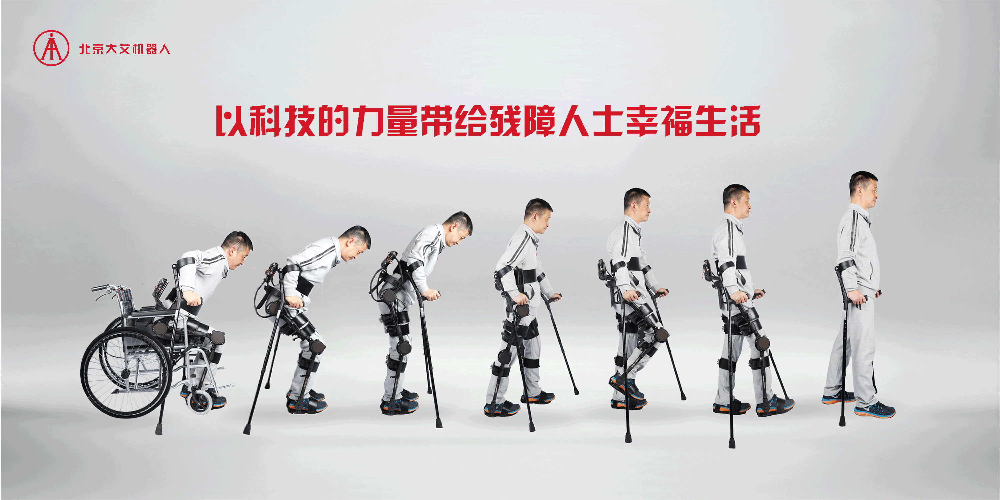

lower-limb rehabilitation exoskeleton
AiWalker

Beijing Ai-Robotics (北京大艾机器人) is a Beijing-based medical robotics company specializing in lower-limb rehabilitation exoskeletons for patients with spinal cord injury, stroke, and cerebral palsy. Their devices are used across rehabilitation hospitals throughout China, supporting patients in relearning how to walk under clinical supervision. The company gained national recognition when their exoskeleton was selected for the 2022 Beijing Winter Olympics torch relay — a signal of both engineering credibility and public trust.
As China's healthcare policy shifts toward home-based rehabilitation, Ai-Robotics faces a critical inflection point: the person operating the device changes from a trained clinical therapist to an untrained family caregiver. The hardware doesn't change — but the entire service context does. This transition is the core design tension the internship set out to understand and address.

Product Service Design Assistant
- Hospital
- Handoff · break point
- Home
- Design layer
Therapist-led
Therapist sets up & operates the device. Full guidance on hand.
Handoff
Operating knowledge doesn't transfer with the device. Information gap.
Caregiver-led
Family faces the interface alone. No help present.
My service interventions · bridging the handoff
- 01Caregiver onboarding
- 02Simplified home-mode UI
- 03Remote tele-rehab check-in
- 04Error loop → therapist
"Which hardware feature do we add next?"
"How do we keep care continuous once the patient goes home?"
"The product failed" is usually "the service didn't catch the person" — asymmetry between roles, amplified at a handoff, landing on the most vulnerable user.
Note: the blueprint and four touchpoints are my design synthesis based on the research — honestly stated as "research delivered, blueprint proposed."